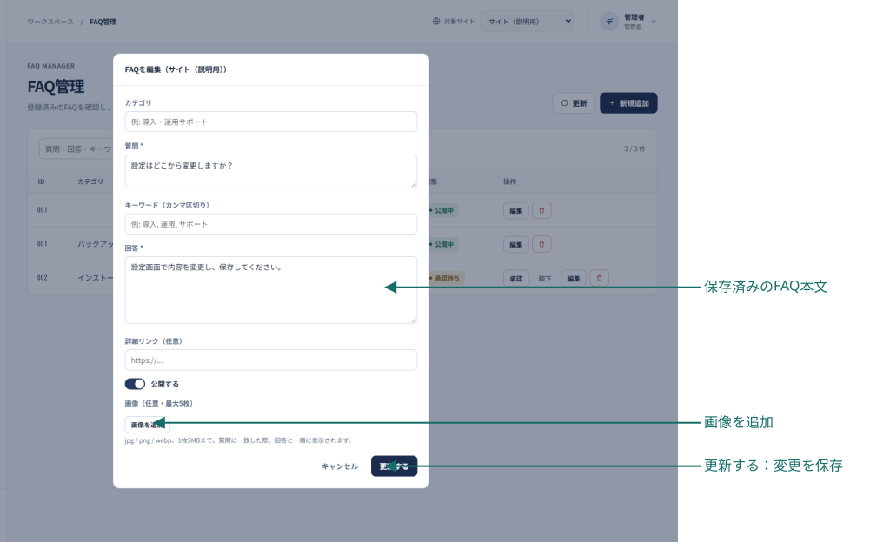
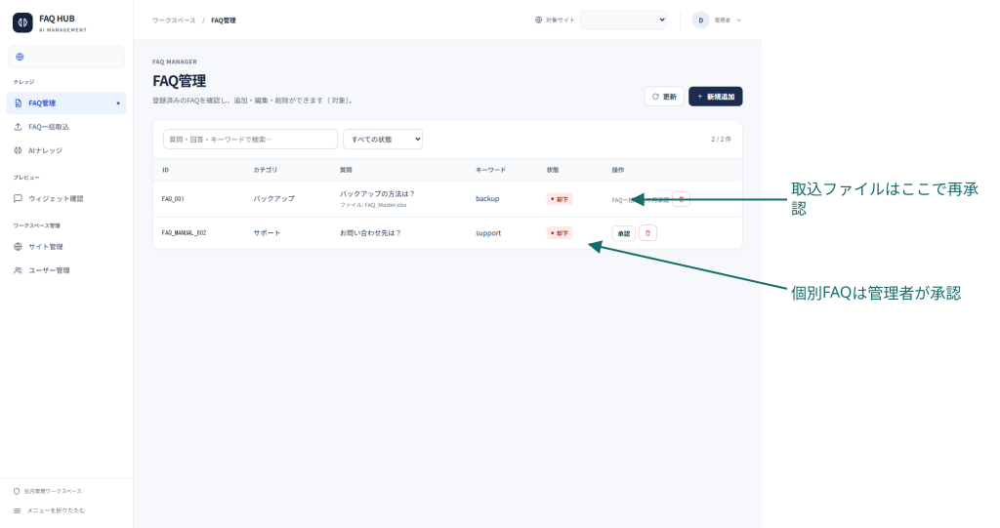
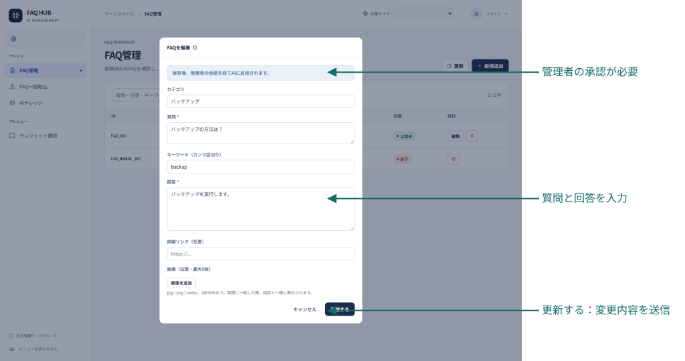

FAQ一覧
サイトを選択 → 検索・状態で絞り込み → FAQを選択。新規追加 → 登録フォームを開く。

FAQを作成
質問・回答を入力 → 作成する → FAQを保存。エラー時 → フォームに入力内容を残して通知。

保存したFAQ
保存成功 → 一覧に追加 → フォームが編集モードに切り替わる → 画像を追加可能。

却下されたFAQ
Excelの取込を却下 → 所属FAQをロック → FAQ一括取込 → 編集 → 承認する → 更新 → FAQの編集が可能になる。

スタッフによるFAQの登録・変更
スタッフが保存 → 承認待ち → 管理者が承認 → 回答に利用。スタッフに下書きの選択はない。
